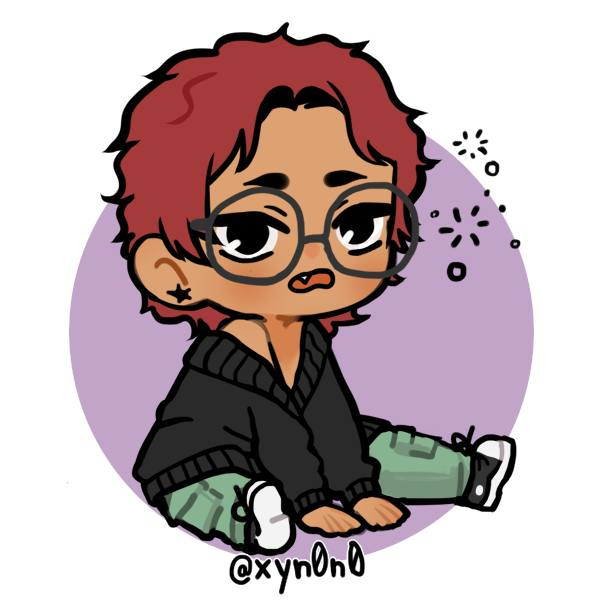

Il mio CV

Generali
Nome: Katia Ombra
Data di Nascita: 29-01-2003
Residenza: Milano
Patente di guida: Cat. B
Istruzione e Formazione
- Liceo Statale Carlo Tenca - Milano| Diploma del Liceo delle Scienze Umane (2022)
- Scuola Superiore per Mediatori Linguistici P.M. Loria - Milano| In svolgimento; al secondo anno
- The Complete 2024 Web Development Bootcamp - Online| In svolgimento
Esperienza lavorativa
Skill
- Hard-working
- Ben organizzata
- Flessibile
Lingue
- Italiano: Madrelingua
- Inglese: B2
- Russo: B1
Altro
Ecco i miei hobby e interessi.